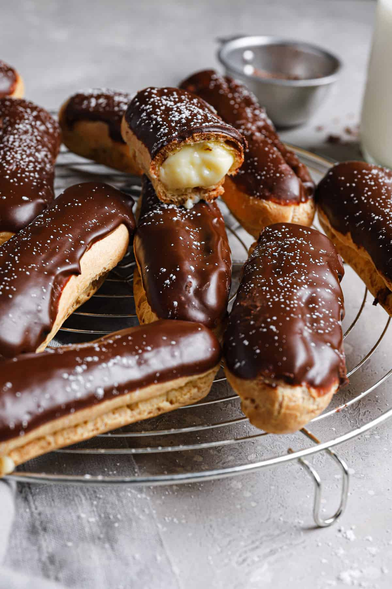
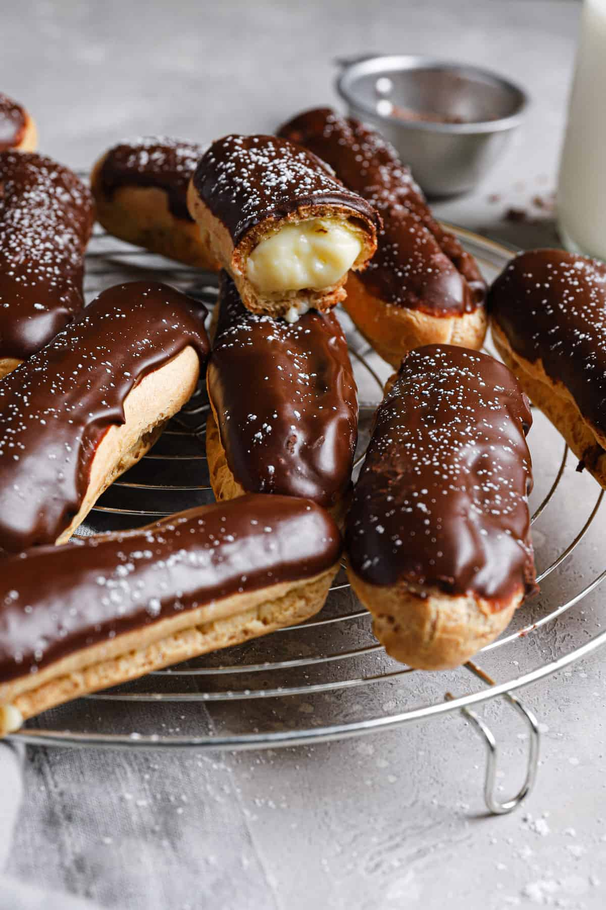

Malzemeler
- Hamur
- 1 su bardağı un
- 1 su bardağı su
- 110 gr tereyağı
- 4 yumurta
- 1 tutam tuz
- Pastacı Kreması
- 350 ml süt
- 2 yemek kaşığı un
- yarım su bardağı toz şeker
- 2 adet yumurta sarısı
- 1 paket şekerli vanilin
- 1,5 yemek kaşığı tereyağı
- Çikolata
- 1 paket bitter çikolata
- 1 paket sütlü çikolata
Tarif
- Ocağa tereyağı ve suyu koyun, kaynayınca unu ekleyip 2 dakika sonra altını kapatın.
- Bir tutam tuzu da ekleyip, hamur soğuyunca yumurtaları teker teker karıştırarak ekleyin.
- Yumurtaları ekleyince hamurun kıvamı cıvıklaşıyor fakat karıştırmaya devam edin, toparladığını göreceksiniz.
- Hamur hazır olunca bir sıkma torbasına alın ve fırın tepsisine istediğiniz şekilde sıkın.
- Hamuru 170 derece fırında 40 dk pişirin.
- Bu sırada ocağa muhallebi malzemelerini ekleyin. (Yumurta sarıları hariç.)
- Malzemeler kaynayınca yumurta sarılarını temperleyerek karışıma ekleyin.
- Kremayı da sıkma poşetine alın. Hamurları fırından çıkarıp ikiye kesin.
- Kremayı iki parça arasına sıkın.
- Üzeri için çikolataları çok kısık ateşte bir tavada eritebilirsiniz.
Afiyet olsun.


 
